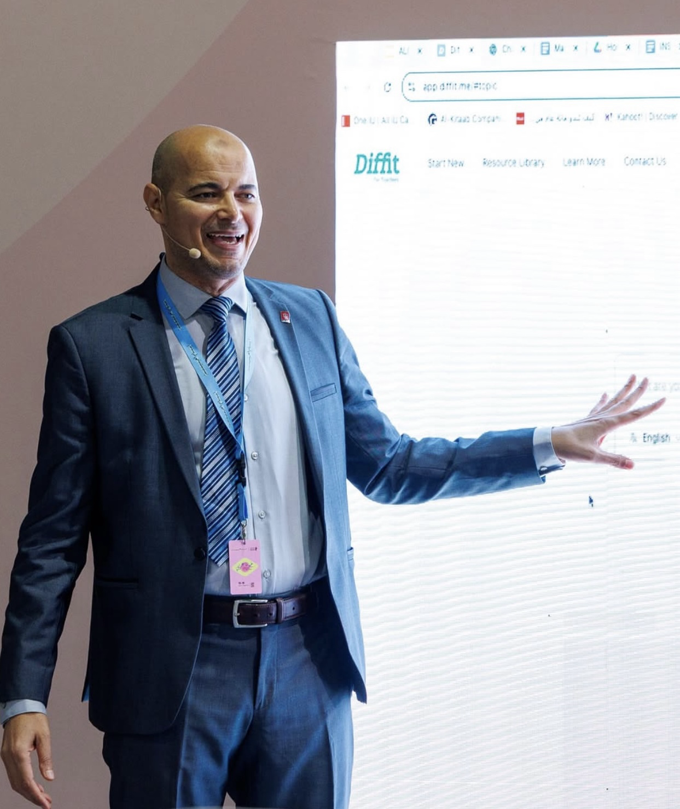

Graduate Mentorship
2019 – Present
- • Advisory Committees: 17+ Ph.D. Students
- • Qualifying Exam Committees: 22+ Students

Leading advancements in Arabic language education through university governance, international advisory roles, and organizational leadership.
Contributing to the governance of Indiana University through the Bloomington Faculty Council and shaping the future of the department through executive committee membership.
2019 – Present
Serving as External Advisor and Reviewer for A’Sharqiyah University (ASU), Oman, on the design and standardization of a National Benchmark Test to measure Arabic proficiency for native and non-native speakers (2025).
Pioneering disciplinary standards as Chair of ACTFL Community Colleges SIG (2024) and organizing the 39th Annual Symposium on Arabic Linguistics (ASAL39) at Indiana University in 2026.
Mentoring future leaders as Faculty Advisor for the Model Arab League delegations (2023–2024) and long-term advisor for the Saudi Students Club at IU since 2018.
2023 – 2025
Conducted second-round evaluations for 100+ conference proposals and Critical Language Scholarship (CLS) Program selection processes.
Al-'Arabiyya
Reviewing scholarly contributions for the Journal of the American Association of Teachers of Arabic (Georgetown University Press).
2022 – 2023
Managed social media and served as Vice Chair of the Research Committee for the Indiana Foreign Language Teacher Association.
Initiated Language Fest to increase enrollment; coordinated the 2024 Ohio Valley Model Arab League hosting guest speaker Ambassador Maged A. Abdelaziz.
Organized Calligraphy Workshops, Pottery Nights, Arabic Fashion Shows, Talent Shows, and the Arabic Writing Competition to foster student community.
Initiated and established the Tutoring Community of Flagship Programs (TCFP), connecting national Flagship networks.